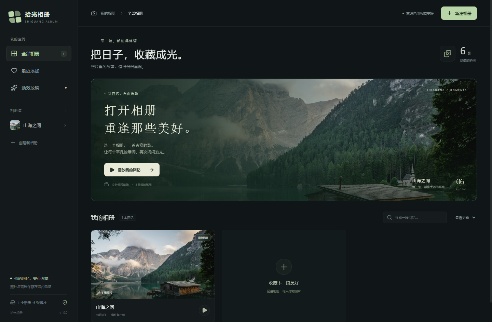

双击 Shiguang-Album-1.0.0-x64-portable.exe。不需要安装其他运行环境。
打开 Shiguang-Album-1.0.0-x64-nsis.exe，选择安装位置。安装后使用桌面或开始菜单的“拾光相册”快捷方式。
首次打开已经准备了“山海之间”示例相册，点“播放我的回忆”就能体验。此次交付是本机文件，GitHub 发布暂缓。首版程序未数字签名，随附 SHA256SUMS.txt 供核对文件。

关闭后会保存照片、配乐、排序和播放设置。重新打开停在相册首页。
| 按键 | 操作 |
|---|---|
| 空格 | 暂停 / 继续 |
| ← → | 上一张 / 下一张 |
| F | 进入 / 退出全屏 |
| Esc | 先退出全屏，再返回相册 |
| 照片 | JPG / JPEG、PNG、WebP、GIF、BMP、AVIF、HEIC / HEIF |
|---|---|
| 音乐 | MP3、WAV、OGG、M4A，每个相册一首，循环播放 |
| 十种动效 | 淡化、横向滑动、纵向滑动、缩放、慢推拉、立体翻页、立方体旋转、横向百叶、纵向百叶、棋盘格显现 |
默认停留 5 秒、完整显示照片、顺序循环播放。随机动效会在当前主题里选择，并避免连续重复。系统启用“减少动态效果”后，自动使用柔和淡化。
HEIC 会在后台转为播放用 JPEG，原件保留；转换组件已随软件附带。导入时可看到进度并取消，损坏或转换失败的照片会单独提示。GIF 保留动画。
单张照片最大 200 MB、1 亿像素，单次最多导入 20000 张。当前相册内按文件内容跳过重复照片，不同相册可以收藏同一张。M4A 的特殊编码或受保护文件可能无法播放；HEIC 播放预览不提供 HDR 或 Live Photo 视频。
照片和音乐会复制到本机相册库：%APPDATA%\ShiguangPhotoAlbum\library。在文件资源管理器地址栏粘贴这个路径即可查看。
导入后移动原文件仍能播放；移除照片或相册只处理相册库里的副本。便携版和安装版共用此目录，卸载会保留相册数据。
备份：先关闭程序，复制整个 library 文件夹到安全位置。换电脑时先打开一次程序再关闭，用备份替换另一台电脑的 library 文件夹，重新打开即可。
索引有自动备份。索引读取失败时会尝试恢复最近一次备份；两份都损坏时会保留数据并停止打开。此时先备份整个相册库，再处理恢复，避免直接删除数据。
照片导入失败：查看提示的文件名，确认图片没有损坏、大小符合限制，磁盘有足够空间。成功导入的其他照片仍会保留。
音乐没有声音：检查音量与静音状态，暂停后继续；无法播放时换用普通 MP3 或 WAV 文件。
更新或重装：先关闭拾光相册，再运行安装程序；建议更新前备份相册库。此版本不含自动更新。
完整源码包为 Shiguang-Album-1.0.0-source.zip，采用 MIT 许可。源码中的 README 提供构建说明。第三方组件、HEIC 对应源码和许可随程序附带，安装目录的 resources 中可查看。
示例照片来自 Unsplash，仅用于首次体验。程序不上传照片或音乐，不含云同步、遥测、登录或在线播放。